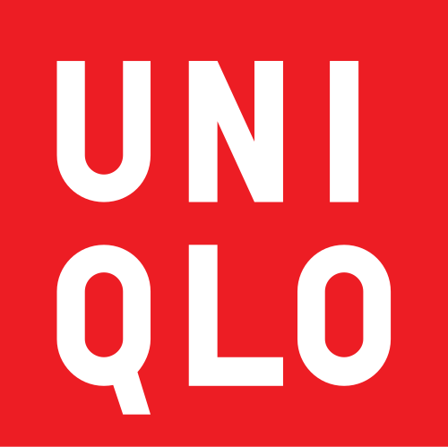
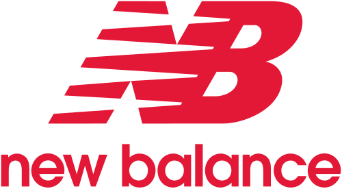
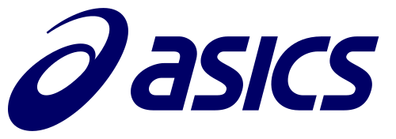
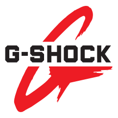
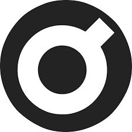
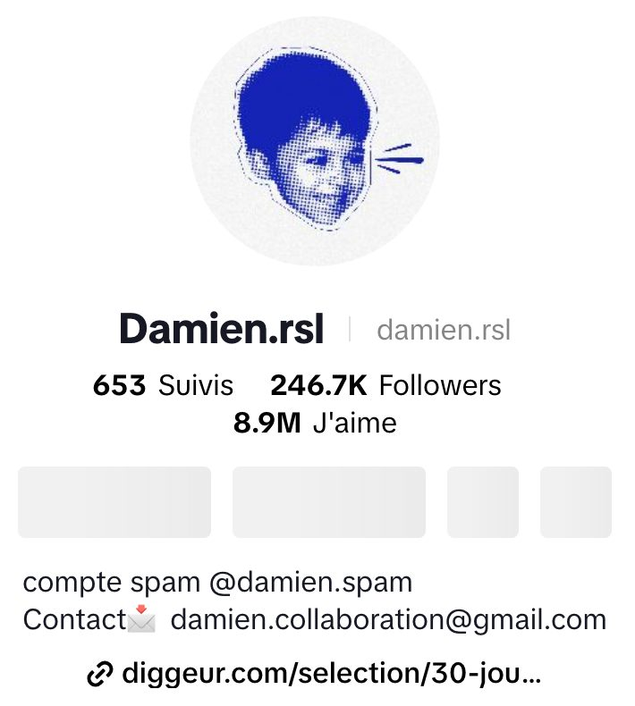
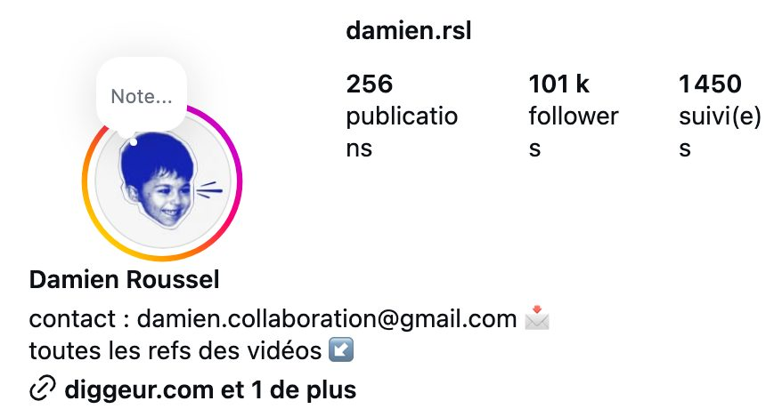
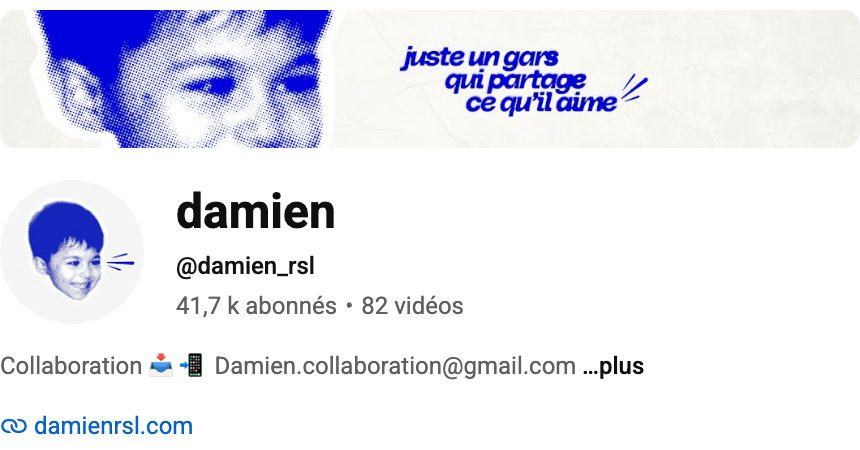

你好，我是 Damien
法国时尚与球鞋内容创作者，服装品牌 ADV 的创始人。
Hello, I'm Damien Roussel: French fashion and sneaker creator, founder of the clothing brand ADV.
TikTok 上获得 890 万个赞。粉丝主要是法国 18 至 30 岁、热爱服装的年轻人。
Almost 390,000 followers and 8.9 million likes on TikTok. Mostly young people in France (18 to 30) who love clothes.
11 个国际品牌
11 international brands, from the best known in China.





ADV 是我自己的品牌
我不是这些品牌的员工，也不是它们的采购。这些品牌付费请我作为内容创作者介绍他们的产品。
I don't work for these brands and I'm not their buyer. They paid me, as a content creator, to present their products.
ADV 是我自己想创建的品牌。我带来的是丰富的经验，以及一个已经在购买我推荐的产品的庞大社群。
ADV is my own brand, the one I want to build. What I bring is real experience and a large community that already buys what I recommend.
我 16 岁开始在网上买卖衣服，一直在寻找“价格与价值之间的差距”。今天我的视频告诉大家：什么衣服真正值得买。
I started buying and selling clothes online at 16. My work is about the gap between what a piece costs and what it is really worth: my videos tell people which clothes are truly worth buying.
三个人，已经准备好启动
A team of three, ready to launch.
创始人，内容创作者，品牌的面孔。
Founder, creator, the face of the brand.
我的左膀右臂。我们一起制作所有视频，并计划成为 ADV 的合伙人。
My right-hand man. We make all the videos together, and we plan to become partners in ADV.
设计师，负责品牌形象和技术资料。
Designer: brand image and tech packs.
寻找长期的生产伙伴
我们正在走访工厂，为 ADV 寻找可靠的伙伴：裤子、皮带、钱包、卫衣、牛仔裤。我们也在社交媒体上记录这次旅行：社交媒体目前是我们的主要工作。
We are visiting factories to find reliable partners for ADV: trousers, belts, wallets, hoodies, jeans. We also document this trip on social media, which is our main activity for now.
我们坦诚：刚开始的订单不一定很大。
To be honest: our first orders will not necessarily be big.
但潜力巨大。凭借 Damien 的影响力，这个项目有很大的机会走红、获得成功。
But the potential is huge: thanks to Damien's audience, this project has a strong chance to go viral and succeed.
项目已经成型。整个计划我们已经想好了，三人团队随时可以开始。
The whole project is already planned, and our team of three is ready to start.
简单的客户。清晰的技术资料、快速确认、按时付款、一个联系人。
An easy client: clear tech packs, quick decisions, payment on time, one contact.
扫码关注我 Scan to follow me

扫码关注 @damien.rsl
24.67 万粉丝 · 246.7K followers

扫码关注 @damien.rsl
10.1 万粉丝 · 101K followers

扫码订阅 @damien_rsl
4.17 万订阅 · 41.7K subscribers
谢谢您的时间，期待合作！
Thank you for your time. We look forward to working together.
ADV · Damien Roussel · Paris